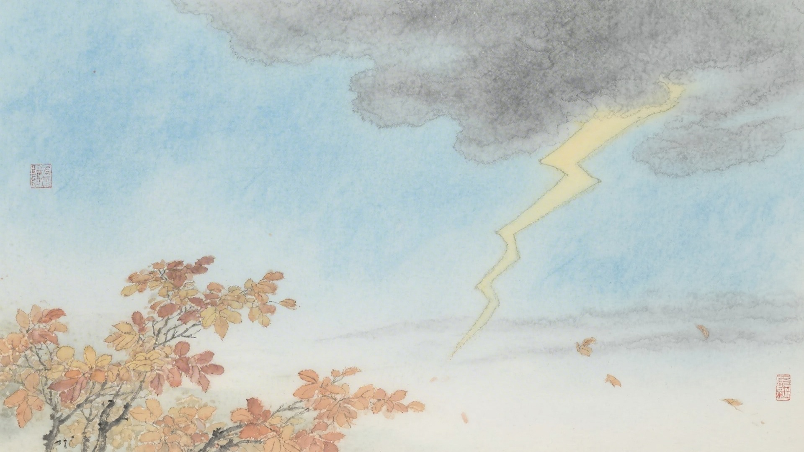
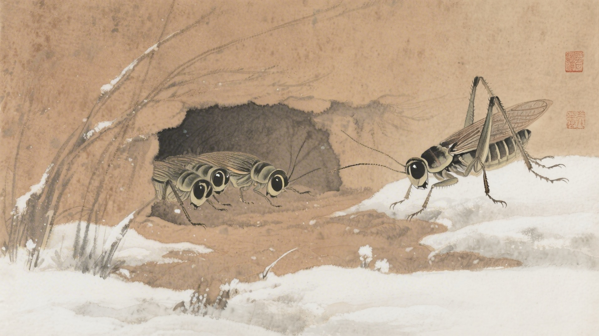
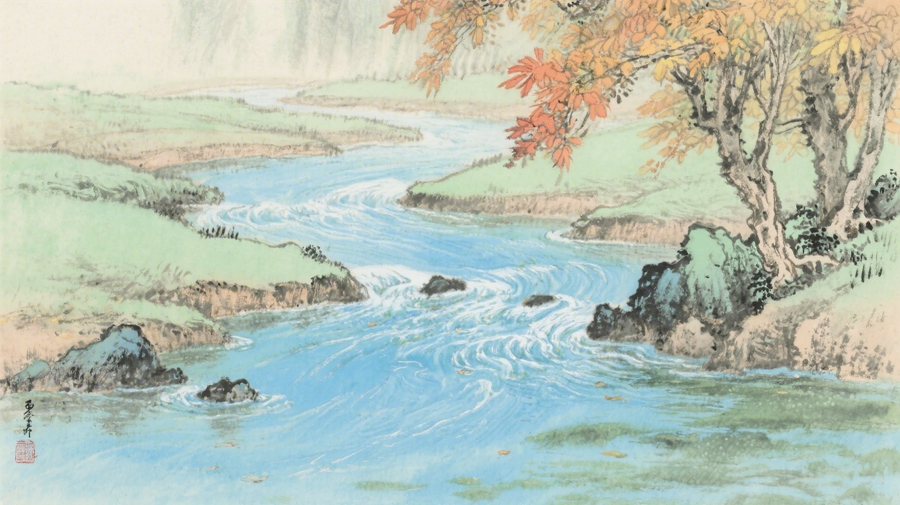
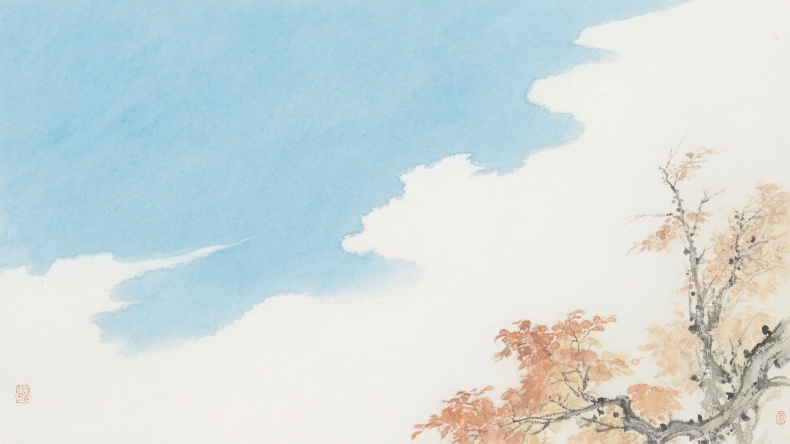
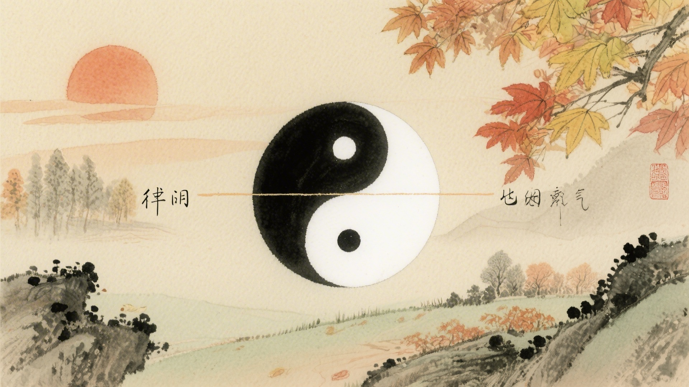

《中国传统色：故宫里的色彩美学》一书中为什么把下面这些颜色归入秋分节气？
卵色、葭菼、冰台、青古
栾华、大赤、佛赤、蜜褐
孔雀蓝、吐绶蓝、鱼师青、软翠
浅云、素采、影青、逍遥游
秋分这天，太阳又直射赤道，昼夜一样长。雷声不响了，蛰虫开始藏，河水开始干。古人说秋分有三候：雷始收声，蛰虫坯户，水始涸。这十六种颜色，便从这三候里来。
秋分的"分"，是平分的意思。昼夜平分，秋色平分。颜色站在中间，一半是夏天的尾巴，一半是冬天的前奏，不偏不倚。
对应：秋分节气一候"雷始收声"的起、承、转、合四色。
色彩意象：雷声隐去，天地安宁。
从淡青到古青，是雷声隐去的色彩变化，也是秋分时节最宁静的天空。

对应：秋分节气二候"蛰虫坯户"的起、承、转、合四色。
色彩意象：蛰虫封洞，秋意更深。
从金黄到深红，是蛰虫封洞的色彩变化，也是秋分时节最温暖的画面。

对应：秋分节气三候"水始涸"的起、承、转、合四色（其一）。
色彩意象：水位下降，秋水澄澈。
从深蓝到翠绿，是秋水澄澈的色彩变化，也是秋分时节最清透的景象。

对应：秋分节气三候"水始涸"的起、承、转、合四色（其二）。
色彩意象：秋高气爽，天高云淡。
从淡白到意境，是天高云淡的色彩变化，也是秋分时节最辽阔的天地。

秋分这天，太阳落下去，和春分一样，正好在正西。昼夜平分，冷暖也平分。颜色站在中间，不冷不热，不深不浅，像是走钢丝，平衡得刚刚好。

颜色也懂得中庸。它们不再像夏天那样浓，不再像冬天那样淡。该红的红，该黄的黄，该青的青，不多不少，正好在中间。像是老学究，说话做事，都有分寸。
（以上解读不代表原书观点）